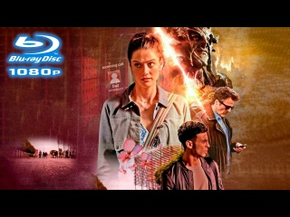
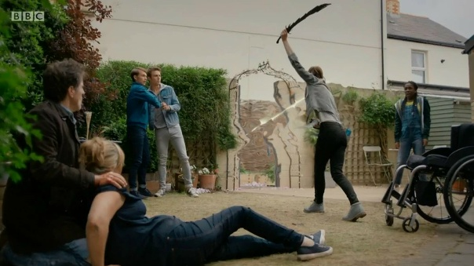

 | Весь 1-й сезон (8 серий) |
Co-Owner of a Lonely Heart
Дата выхода: 5 ноября 2016
Формат: 45-минутный эпизод
| Варианты озвучек: | * Разные: смотрите по инструкции |
|---|---|
| Скачивание и просмотр: |
Эйприл начинает ощущать последствия того, что она разделяет своё сердце с Коракином, попытки которого разорвать эту связь её только укрепляют. Когда живущий отдельно от семьи отец Эйприл внезапно появляется, она нападает на него с помощью силы Теневого Рода, проявляя черты, присущие лидеру этой расы. Напуганную удивительной новоприобретённой силой Эйприл утешает Рам, и девушка клянётся, что её сердце вновь будет принадлежать ей безраздельно. Между тем, с остальными происходит что-то странное — Лондон медленно усеяли необычные, зловещего вида цветочные лепестки.
